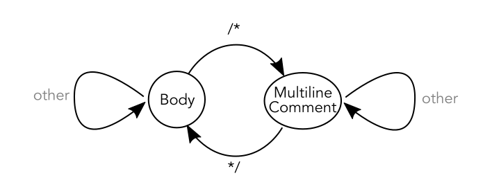
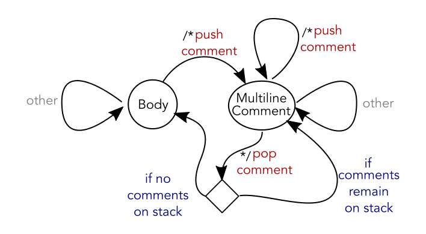

Parsing whitespace in an Xcode extension
I took a break from converting projects to Swift 3 this weekend and instead played around with writing a new “Source Editor Command” extension for Xcode 8. The result is an extension that detects and corrects whitespace issues. It’s a topic I’ve touched on before because I’m frustrated by the continuous burden of correcting whitespace in my projects. I wanted to see if an Xcode source extension could reduce my annoyance with this issue.
The fun part of this exercise for me was writing a pushdown automaton parser where all of the parser logic was expressed through the case patterns of a single Swift switch statement. Accordingly, most of this article is not really about Xcode Source Editor Command extensions or whitespace issues but is actually about design choices related to large, complex switch statements in Swift: choosing data types to switch upon, designing case patterns to handle a deep decision tree in a single switch statement, when to use custom pattern matching and when to use where clauses.
Reformatting source files in Xcode
Code edited in Xcode is particularly prone to whitespace problems. Xcode file templates hard code indentation, ignoring your project settings. Code snippets also hard code indents and additionally ignore the indentation of the current scope, leading to code completion that falls into the left margin until you dig it out again:
func applicationDidBecomeActive(_ application: UIApplication) {
for <#item#> in <#items#> {
<#code#>
}
}Beyond indentation problems, there are different Swift community opinions about whether some : characters should have spaces on both sides or just the right side, about whether case labels should be indented, about whether #if contents should be indented and more. Additionally, there’s always the possibility of typos inserting whitespace where it doesn’t belong or deleting whitespace you’d prefer to keep.
Xcode does offer “Re-Indent” for correcting the indentation of your file (menu “Editor → Structure → Re-Indent”, or Ctrl-I, by default). In general, it’s fairly good. I often wonder why it isn’t run automatically over code created from templates or snippets to apply the user’s indentation preferences.
It does have four limitations:
- It only fixes indentation problems (not other whitespace issues).
- It can’t be run in a “pre-flight” mode to see if or what it would change.
- It always marks the file as “dirty” so it’s difficult to tell what, if anything, changed.
- It’s not open source so I can’t customize it to my personal preferences.
With the new “Source Editor Command” extensions possible in Xcode 8, I wanted to see if I could produce something that enforces whitespace rules as I’d like them to be enforced in my own projects.
A pushdown automaton for whitespace parsing
I’ve written recursive descent parsers on Cocoa with Love before but they’re a lot of work (particularly if you need to refactor the grammar) and in this case, it’s probably not the best option.
The most important task in whitespace parsing is tracking the number of scopes entered and exited – we need this to determine the indent level. This involves pushing “scope” items on and off of a parse stack as they are encountered and counting the number of “scope” items on the stack to determine the indent level.
In a recursive descent parser, the parse stack is the call stack. This is efficient in most cases but since we can’t simply count items on the call stack (without preventing inlining and doing other unsafe things) we end up needing to replicate the parse stack in an array as well as on the call stack, which ends up feeling redundant.
Instead, I’m going to create a pushdown automaton, using an updated version of my ScalarScanner from Comparing Swift to C++ for parsing as part of the underlying tokenizer.
In most respects, a pushdown automaton is really just an extension of a finite automaton. You’ve probably seen diagrams for finite automatons, they look like this:

In this diagram is a finite automaton with two states: it’s either parsing “body” text or it’s parsing a “comment”. If it’s in the “body” and it hits a “/*” then it will transition to “comment” and if it’s in the “comment” and it hits a “*/” it will transition back. Any other token will cause the parser to spin in-place.
The problem with this type of automaton is that it can’t handle nesting. If there’s a comment inside a comment (valid in Swift) this parser will see the inner “*/” and will immediately return to “body” state incorrectly treating the remainder of the outer comment as “body”. You could add additional states for a finite number of comment nesting level states but it quickly gets complicated dealing with large numbers of states and it will only ever handle a finite nesting level rather than true unbounded nesting levels.
Let’s look instead at a pushdown automaton:

The key distinction versus a plain automaton is that each arrow may also push and pop values on a stack and any arrow may fork along multiple paths based on the contents of the stack. Unlike the finite automaton, the stack gives the pushdown automaton an unlimited number of states, so it can represent unlimited nested – in this case of multiline comments.
The nice thing about Swift for modelling automata is that the logic for the states, arrows and stack can all be handled by a single switch statement, resulting in code that very closely models the structure of the automaton. Here’s the main loop of the pushdown automaton in the whitespace parser, showing the cases in the previous diagram:
while let token = nextToken(&scanner) {
switch (state, token, stack) {
case (.body, .slashStar, _): arrow(to: .multiComment, push: .comment)
case (.body, _): break
case (.multiComment, .starSlash, UniqueScope(.comment)): arrow(to: .body, pop: .comment)
case (.multiComment, .starSlash, _): arrow(to: .multiComment, pop: .comment)
case (.multiComment, .slashStar, _): arrow(to: .multiComment, push: .comment)
case (.multiComment, _, _): break
}
}This code tests the stack before popping, unlike the diagram, so it tests for a unique value in the stack, not an empty stack, but otherwise this code contains the same logic as the previous diagram.
The full parser is about 120 lines long but it is simply more states like this and more tokens.
Custom matching patterns in Swift
When a .starSlash is encountered in the .multiComment state, the code implements the following logic:
- if exactly 1 comment is on the stack
- pop the comment
- return to body
- otherwise
- pop the comment
- stay at multiline comment.
This logic involves evaluating the condition “if exactly 1 comment is on the stack” which is implemented with the UniqueScope(.comment) pattern in the code. It’s fairly unusual to see this type of construction in Swift but it really makes the code clearer and more concise in this situation so I wanted to talk about it a little more.
The stack is an Array<Scope>. By default, there’s no pattern matching for Array – not even basic equality matching. For example, the following code won’t compile:
switch ["a", "b"] {
case ["a", "b"]: print("Can't match arrays")
default: break
}Pattern matching is automatically defined for types that implement Equatable but (due to type system limitations), Array does not implement Equatable (despite having a == operator definition).
In any case, we’re not interested in “equality” style matching here. Instead we want to match against arrays that contain a single instance of a given Scope. For this purpose, I’ve used a type named UniqueScope. This type is basically a predicate pattern and is defined as follows:
struct UniqueScope {
let scope: Scope
init(_ scope: Scope) {
self.scope = scope
}
}
func ~=(test: UniqueScope, array: Array<Scope>) -> Bool {
return array.reduce(0) { $1 == test.scope ? $0 + 1 : $0 } == 1
}The UniqueScope type is clearly very simple. Its only purpose is to offer the associated ~= implementation which will be used when evaluating the case expression. Technically, the following two switch cases are equivalent:
switch stack {
case UniqueScope(.comment): print("Just one .comment in the stack")
case _ where UniqueScope(.comment) ~= stack: print("Just one .comment in the stack")Creating better case patterns
The first case in the previous code sample isn’t just more syntactically efficient, it’s a vastly better conceptual design. The second case should be considered an anti-pattern: you should never use a where clause to do what should be done in the case pattern.
When to where clause
The only scenario where a where clause is likely to be the best option is in testing properties unwrapped by the case pattern:
switch anOptionalInt {
case .some(let value) where value > 1: print("Value is greater than 1") You could avoid the where clause here by writing another custom pattern matching predicate:
switch anOptionalInt {
case MatchValue(greaterThan: 1): print("Value is greater than 1") which is syntactically a little tighter but unless you needed to apply this pattern dozens of times, the effort of defining the type is probably more than you’re saving. Additionally, using the standard syntax of the language has familiarity advantages to new readers.
External conditions
What about situations where the where clause tests a value that is completely unrelated to the switch expression or unwrapped values therein?
For example, in a previous version of the parser, I had written:
switch (state, token, stack) {
case (.body, .space, _) where lengthOfToken > 1:
// ... flag multiple spaces as "unexpected" in body text ...There’s no technical problem with this code but there is a conceptual problem. The case chosen by the switch statement is now dependent on properties outside the switch expression. This is conceptually dishonest.
More honest might be adding lengthOfToken to the tuple in the switch expression:
switch (state, token, stack, lengthOfToken) {
case (.body, .space, _, 1...Int.max):
// ... flag multiple spaces as "unexpected" in body text ...which is fine but this switch statement contains nearly 100 cases and this field will be a mere placeholder for all other cases. It’s arguably better conceptually but it’s worse sytactically.
Compose program state into fewer variables
Ultimately I made the decision that the design was wrong; that .space where length == 1 and .space where length > 1 were different tokens. This eliminated the need to test the length, since that test would already be implicit when matching on .multiSpace.
switch (state, token, stack) {
case (.body, .multiSpace, _):
// ... flag multiple spaces as "unexpected" in body text ...If you compose your values correctly on construction, then you’re effectively hoisting conditionals from later to earlier in your data pipeline – which can simplify your program if the later code is larger, more complex or runs more often.
Compromise
I’ve given a bunch of rules here but ultimately, sometimes you have to make judgement calls, trading syntactic efficiency for conceptual honesty. The final case I want to show is where the indentation level is validated for the line:
case (.indentEnded, ValidIndent(self, column), _):
// ... proceed normally ...
case (.indentEnded, _, _):
// ... flag invalid indent ...The ValidIndent predicate pattern type is constructed with self and the current column and it is matched against the last read token. What this means is that it is essentially given the whole function and parser state to evaluate its result.
This behavior of this case pattern isn’t conceptually pure. This case is actually dependent on the stack (i.e. the third column of the switch but which sits as an empty placeholder in the case pattern) via the self argument, even though it is nominally only matching against the token. However, without this pattern matching, the 8 tokens and 2 stack configuration this pattern conceals would need to be pulled back into the main switch statement and then doubled (once for a valid indent and once for an invalid indent).
I opted for a little conceptual muddiness over case replication.
Case lists?
One option I didn’t really look at closely was case lists. All of my code takes this form:
switch expression {
case a: fallthrough
case b: fallthrough
case c: fallthrough
case d: print("Matched a to d")
}but this type of switch can be written as:
switch expression {
case a, b, c, d: print("Matched a to d")
}With short case patterns, this is an improvement. I’m not sure it would really help with the large case patterns involved when matching against three-element tuples nor would it make a very long switch easier to read.
Usage
The code for the Xcode Source Editor Command extension and whitespace parser discussed in this article is available as part of the CwlWhitespace project on Github. This project is written for Swift 3 and requires Xcode 8 to build.
The application is the delivery mechanism. Run the application once and the extension will be installed. (If running Xcode 8 on El Capitan, you need to enable Xcode extensions. See the Xcode 8 release notes for more.) To uninstall, drag the application to the Trash.
The extension itself has two commands, available from the “Whitespace Policing” submenu at the bottom of the “Editor” menu in Xcode when editing a source file:
- Detect problems
- Correct problems
The first command uses multiple selections to select every text range in your file that it believes is violating a whitespace rule. If a line contains a zero-length problem (missing whitespace or missing indent) then the whole line will be selected.
The second command edits whitespace problems to the expected values and selects the changed regions in your editor.
The tests in “CwlWhitespaceTaggingTests.swift” are the only documentation about what whitespace is permitted and what is disallowed.
WARNING: this is a program that – if you use the “Correct Problems” command – may deliberately delete characters from your source file. The only tests I have performed are the tests in the “CwlWhitespaceTests” bundle. There could be bugs outside the tested behavior so be prepared. Pay attention to what the extension has done to your file and if unhappy, use Xcode’s “Undo” (which should roll back any changes made by the extension). Please keep your files in a version control system and also use a backup system to protect your data.
Conclusion
I mostly wrote this Xcode Source Extension for myself. Without an authoritative “swift-format” to enforce common rules, these types of code formatting choices end up being personal rather than universal. However, the code is open source so you’re welcome to hack at it and use it as the basis for something that enforces your own preferences if you wish.
I think the core parser involved is pretty good. To this point is has endured tweaks and additions quite easily (although if it gets much bigger it might make sense to split it across different functions for each state). I’ve only focussed on a few key features in the current version and I haven’t included any rules for vertical whitespace, operators or a hundred other little areas in Swift where whitespace can occur. It’s possible that it might be better to leave it a little minimalist – I’ll need to see how I feel after using it for a while.
It was interesting to iterate my design of the switch statement and try to decide what constitutes a good case statement and what might be considered bad. The power of Swift’s switch statement remains one of my favorite features of the language but you still have to use it in a way that makes conceptual sense – particularly when it’s over 100 lines long and you can’t necessarily read all parts of it at once.
There’s a tokenizer (also known as a lexer) in the code too (the nextToken and readNext functions in the “CwlWhitespaceTagging.swift” file). I didn’t really discuss it’s a little quirky – although it works well.
Mutexes and closure capture in Swift